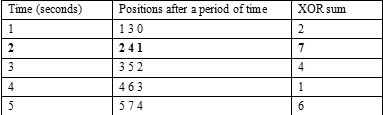

HDU4566. Circle Game
内存限制：2000/1000 MS (Java/Others) 时间限制：131072/131072 K (Java/Others)
题目描述
You must have some knowledge with circle games in ACM problems, such as Joseph Ring problem. Today we are going to introduce a new circle game described as follows. There is a circle which contains M points, numbered from 0 to M-1. At first, n students stand in different points of the circle. It is possible that more than one student stand in the same point. For each second, each student moves one step forward in clockwise direction. The following picture gives us an example of that M equals to 8 and n equals to 3. Initially, the first student S1 stands in the point 0, the second student S2 stands in the point 2 and the third student stands in the point 7. After 2 seconds, they will change their positions as the right part of the picture.

At the beginning of the game, Tracy writes down the positions of all students. Then he will go to sleep and students will abide by the above rules to make this game run until Tracy wake up. After a period of time, Tracy wakes up. He finds it is very hard to identify where the first student S1 stands in and where the second student S2 stands in and so on, because all students are the exactly similar and unable to be distinguished. So Tracy records all the positions of students and writes down the XOR sum of these positions (The XOR sum of an array A means A[0] xor A[1] xor … A[n-2] xor A[n-1] and xor is the exclusive or operation, for example 0111 xor 1011 = 1100). Now Tracy wants you to help him to know how many seconds he had slept. To simplify the problem, the number of points is always a power of 2 like 2m.
Furthermore, Tracy knows that the time he slept is not greater than T. Please note that the time Tracy slept must be greater than zero. There may have many different periods of time corresponding with the above conditions.
At the beginning of the game, Tracy writes down the positions of all students. Then he will go to sleep and students will abide by the above rules to make this game run until Tracy wake up. After a period of time, Tracy wakes up. He finds it is very hard to identify where the first student S1 stands in and where the second student S2 stands in and so on, because all students are the exactly similar and unable to be distinguished. So Tracy records all the positions of students and writes down the XOR sum of these positions (The XOR sum of an array A means A[0] xor A[1] xor … A[n-2] xor A[n-1] and xor is the exclusive or operation, for example 0111 xor 1011 = 1100). Now Tracy wants you to help him to know how many seconds he had slept. To simplify the problem, the number of points is always a power of 2 like 2m.
Furthermore, Tracy knows that the time he slept is not greater than T. Please note that the time Tracy slept must be greater than zero. There may have many different periods of time corresponding with the above conditions.
输入格式
There are several test cases, each test case firstly contains four integers n, m, S, T. S is the XOR sum of students’ positions when Tracy wakes up. Another 3 integers n, m, T are described as the above. Then n integers will follow in the next line, which represent the positions of students initially. The input will finish with the end of file.
0 < n <= 100000, 0 < m <= 50, 0 <= S< 250, 0 < T <= 1016 and the student position is in the range [0, 2m).
0 < n <= 100000, 0 < m <= 50, 0 <= S< 250, 0 < T <= 1016 and the student position is in the range [0, 2m).
输出格式
For each test case, output the number of possible periods of time that Tracy had slept and matched the above restrictions. Please output zero if no time matched.
样例
样例输入
3 3 7 5
0 2 7
5 3 7 5
1 2 3 4 5
4 4 0 10
1 3 5 7
6 5 18 100
22 10 18 20 2 10样例输出
1
0
4
50
Hint
For the first test case, the following table explains that only “2 seconds” matched the restrictions.
